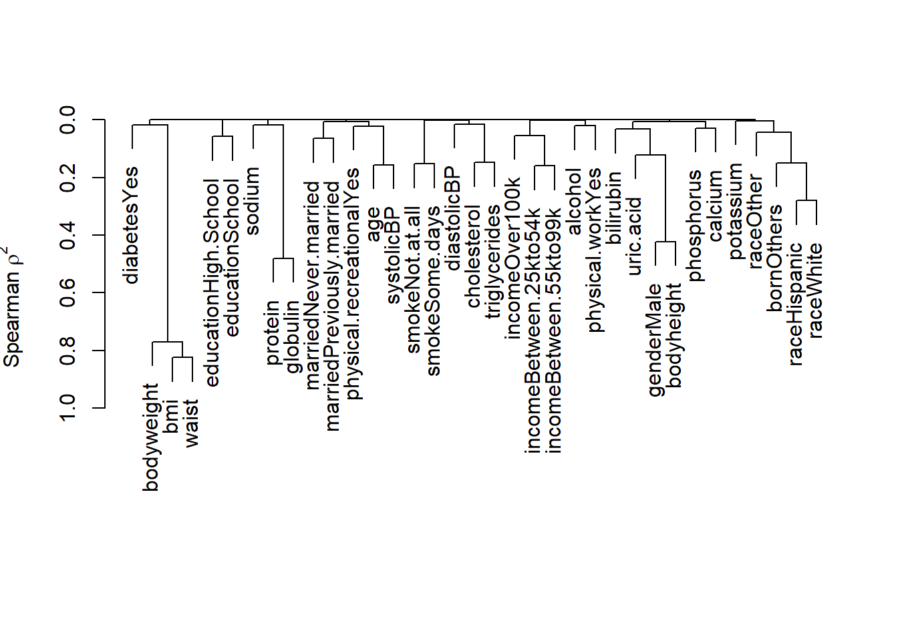

Collinear predictors
In this tutorial, we’ll continue with the data analysis. We’ll focus on an analysis of an NHANES data. This data contains over 1200 observations and 33 variables. These variables come in various types: numeric, categorical, and binary. Our primary goal is to fit a linear regression model to predict cholesterol levels.
Load data
Let us load the dataset and see structure of the variables:
Show the code
load(file = "Data/predictivefactors/cholesterolNHANES15.RData")
#head(analytic)
str(analytic)
#> 'data.frame': 1267 obs. of 33 variables:
#> $ ID : num 83732 83733 83741 83747 83750 ...
#> $ gender : chr "Male" "Male" "Male" "Male" ...
#> $ age : num 62 53 22 46 45 30 60 69 24 70 ...
#> $ born : chr "Born in 50 US states or Washingt" "Others" "Born in 50 US states or Washingt" "Others" ...
#> $ race : chr "White" "White" "Black" "White" ...
#> $ education : chr "College" "High.School" "College" "College" ...
#> $ married : chr "Married" "Previously.married" "Never.married" "Married" ...
#> $ income : chr "Between.55kto99k" "<25k" "Between.25kto54k" "<25k" ...
#> $ weight : num 135630 25282 39353 35674 97002 ...
#> $ psu : num 1 1 2 1 1 1 1 2 1 2 ...
#> $ strata : num 125 125 128 121 125 124 128 120 130 132 ...
#> $ diastolicBP : num 70 88 70 94 70 50 74 70 72 54 ...
#> $ systolicBP : num 128 146 110 144 116 104 142 146 126 144 ...
#> $ bodyweight : num 94.8 90.4 76.6 86.2 76.2 71.2 75.6 84 89.2 81.7 ...
#> $ bodyheight : num 184 171 165 177 178 ...
#> $ bmi : num 27.8 30.8 28 27.6 24.1 26.6 35.9 31 26.9 27 ...
#> $ waist : num 101.1 107.9 86.6 104.3 90.1 ...
#> $ smoke : chr "Not.at.all" "Every.day" "Some.days" "Every.day" ...
#> $ alcohol : num 1 6 8 1 3 2 1 1 2 2 ...
#> $ cholesterol : num 173 265 164 242 181 184 205 287 126 192 ...
#> $ cholesterolM2 : num 4.47 6.85 4.24 6.26 4.68 4.76 5.3 7.42 3.26 4.97 ...
#> $ triglycerides : num 158 170 77 497 63 62 169 245 95 64 ...
#> $ uric.acid : num 4.2 7 6 6.5 5.4 5.5 5.1 4.3 7.6 7.1 ...
#> $ protein : num 7.5 7.4 7.4 6.8 7.4 6.7 7.4 6.8 7.3 7.2 ...
#> $ bilirubin : num 0.5 0.6 0.2 0.5 0.7 0.8 0.4 0.6 1.2 1.2 ...
#> $ phosphorus : num 4.7 4.4 5.3 3.6 3.9 3.4 3.9 4.4 3.2 3 ...
#> $ sodium : num 136 140 139 138 138 136 139 140 140 139 ...
#> $ potassium : num 4.3 4.55 4.16 4.27 3.91 3.97 3.99 4.25 3.8 4.63 ...
#> $ globulin : num 2.9 2.9 3 2.6 2.8 2.5 3.2 2.3 2.7 2.6 ...
#> $ calcium : num 9.8 9.8 9.3 9.3 9.3 9.4 9.6 9.6 9.6 9.6 ...
#> $ physical.work : chr "No" "No" "No" "No" ...
#> $ physical.recreational: chr "No" "No" "Yes" "No" ...
#> $ diabetes : chr "Yes" "No" "No" "No" ...
#> - attr(*, "na.action")= 'omit' Named int [1:3739] 3 4 5 6 8 9 13 14 15 16 ...
#> ..- attr(*, "names")= chr [1:3739] "3" "4" "5" "6" ...Describe the data
Show the code
require(rms)
describe(analytic)
#> analytic
#>
#> 33 Variables 1267 Observations
#> --------------------------------------------------------------------------------
#> ID
#> n missing distinct Info Mean Gmd .05 .10
#> 1267 0 1267 1 88660 3366 84250 84687
#> .25 .50 .75 .90 .95
#> 86019 88692 91252 92670 93089
#>
#> lowest : 83732 83733 83741 83747 83750, highest: 93617 93633 93643 93659 93685
#> --------------------------------------------------------------------------------
#> gender
#> n missing distinct
#> 1267 0 2
#>
#> Value Female Male
#> Frequency 496 771
#> Proportion 0.391 0.609
#> --------------------------------------------------------------------------------
#> age
#> n missing distinct Info Mean Gmd .05 .10
#> 1267 0 61 1 49.91 19.18 24 27
#> .25 .50 .75 .90 .95
#> 36 51 63 72 78
#>
#> lowest : 20 21 22 23 24, highest: 76 77 78 79 80
#> --------------------------------------------------------------------------------
#> born
#> n missing distinct
#> 1267 0 2
#>
#> Value Born in 50 US states or Washingt Others
#> Frequency 991 276
#> Proportion 0.782 0.218
#> --------------------------------------------------------------------------------
#> race
#> n missing distinct
#> 1267 0 4
#>
#> Value Black Hispanic Other White
#> Frequency 246 337 132 552
#> Proportion 0.194 0.266 0.104 0.436
#> --------------------------------------------------------------------------------
#> education
#> n missing distinct
#> 1267 0 3
#>
#> Value College High.School School
#> Frequency 648 523 96
#> Proportion 0.511 0.413 0.076
#> --------------------------------------------------------------------------------
#> married
#> n missing distinct
#> 1267 0 3
#>
#> Value Married Never.married Previously.married
#> Frequency 751 226 290
#> Proportion 0.593 0.178 0.229
#> --------------------------------------------------------------------------------
#> income
#> n missing distinct
#> 1267 0 4
#>
#> Value <25k Between.25kto54k Between.55kto99k Over100k
#> Frequency 344 435 297 191
#> Proportion 0.272 0.343 0.234 0.151
#> --------------------------------------------------------------------------------
#> weight
#> n missing distinct Info Mean Gmd .05 .10
#> 1267 0 1184 1 48904 44337 9158 11549
#> .25 .50 .75 .90 .95
#> 19540 30335 63822 121803 151546
#>
#> lowest : 5470.041 5948.955 6197.660 6480.947 6703.837
#> highest: 203562.855 207197.232 213611.345 218138.797 224891.623
#> --------------------------------------------------------------------------------
#> psu
#> n missing distinct Info Mean Gmd
#> 1267 0 2 0.75 1.493 0.5003
#>
#> Value 1 2
#> Frequency 642 625
#> Proportion 0.507 0.493
#> --------------------------------------------------------------------------------
#> strata
#> n missing distinct Info Mean Gmd .05 .10
#> 1267 0 15 0.994 126.3 4.792 120 121
#> .25 .50 .75 .90 .95
#> 123 126 130 132 133
#>
#> lowest : 119 120 121 122 123, highest: 129 130 131 132 133
#>
#> Value 119 120 121 122 123 124 125 126 127 128 129
#> Frequency 47 74 118 63 77 66 114 104 107 65 53
#> Proportion 0.037 0.058 0.093 0.050 0.061 0.052 0.090 0.082 0.084 0.051 0.042
#>
#> Value 130 131 132 133
#> Frequency 99 120 95 65
#> Proportion 0.078 0.095 0.075 0.051
#> --------------------------------------------------------------------------------
#> diastolicBP
#> n missing distinct Info Mean Gmd .05 .10
#> 1267 0 41 0.997 70.37 13.99 52 54
#> .25 .50 .75 .90 .95
#> 62 70 78 86 92
#>
#> lowest : 0 26 34 38 40, highest: 104 106 108 110 112
#> --------------------------------------------------------------------------------
#> systolicBP
#> n missing distinct Info Mean Gmd .05 .10
#> 1267 0 56 0.998 126.5 19.3 102.0 106.0
#> .25 .50 .75 .90 .95
#> 114.0 124.0 136.0 148.8 160.0
#>
#> lowest : 84 88 90 92 94, highest: 194 196 206 218 236
#> --------------------------------------------------------------------------------
#> bodyweight
#> n missing distinct Info Mean Gmd .05 .10
#> 1267 0 615 1 84.95 23.56 56.29 61.10
#> .25 .50 .75 .90 .95
#> 69.70 81.40 97.00 113.44 127.47
#>
#> lowest : 39.7 39.8 40.7 42.6 42.7, highest: 161.9 166.3 175.7 175.9 178.4
#> --------------------------------------------------------------------------------
#> bodyheight
#> n missing distinct Info Mean Gmd .05 .10
#> 1267 0 376 1 169.2 10.66 153.8 157.0
#> .25 .50 .75 .90 .95
#> 162.6 169.3 176.2 181.1 184.2
#>
#> lowest : 143.8 144.2 145.2 145.9 146.2, highest: 194.6 195.1 195.6 198.4 201.0
#> --------------------------------------------------------------------------------
#> bmi
#> n missing distinct Info Mean Gmd .05 .10
#> 1267 0 284 1 29.58 7.403 20.60 22.06
#> .25 .50 .75 .90 .95
#> 24.80 28.60 33.30 38.24 42.00
#>
#> lowest : 16.3 17.5 17.6 17.7 17.9, highest: 57.2 57.6 59.4 60.7 64.5
#> --------------------------------------------------------------------------------
#> waist
#> n missing distinct Info Mean Gmd .05 .10
#> 1267 0 544 1 101.8 18.47 77.1 81.4
#> .25 .50 .75 .90 .95
#> 90.5 100.3 111.2 122.8 132.5
#>
#> lowest : 65.0 65.5 66.5 68.2 68.7, highest: 159.2 159.8 160.2 160.5 161.5
#> --------------------------------------------------------------------------------
#> smoke
#> n missing distinct
#> 1267 0 3
#>
#> Value Every.day Not.at.all Some.days
#> Frequency 448 665 154
#> Proportion 0.354 0.525 0.122
#> --------------------------------------------------------------------------------
#> alcohol
#> n missing distinct Info Mean Gmd .05 .10
#> 1267 0 14 0.952 3.109 2.419 1 1
#> .25 .50 .75 .90 .95
#> 1 2 4 6 8
#>
#> lowest : 1 2 3 4 5, highest: 10 11 12 14 15
#>
#> Value 1 2 3 4 5 6 7 8 9 10 11
#> Frequency 336 371 189 106 79 95 10 26 4 20 1
#> Proportion 0.265 0.293 0.149 0.084 0.062 0.075 0.008 0.021 0.003 0.016 0.001
#>
#> Value 12 14 15
#> Frequency 23 1 6
#> Proportion 0.018 0.001 0.005
#> --------------------------------------------------------------------------------
#> cholesterol
#> n missing distinct Info Mean Gmd .05 .10
#> 1267 0 203 1 193.1 47.47 132.0 142.0
#> .25 .50 .75 .90 .95
#> 162.5 191.0 217.0 248.0 268.0
#>
#> lowest : 81 93 97 100 101, highest: 345 348 349 358 545
#> --------------------------------------------------------------------------------
#> cholesterolM2
#> n missing distinct Info Mean Gmd .05 .10
#> 1267 0 203 1 4.994 1.228 3.410 3.670
#> .25 .50 .75 .90 .95
#> 4.205 4.940 5.610 6.410 6.930
#>
#> lowest : 2.09 2.40 2.51 2.59 2.61, highest: 8.92 9.00 9.03 9.26 14.09
#> --------------------------------------------------------------------------------
#> triglycerides
#> n missing distinct Info Mean Gmd .05 .10
#> 1267 0 361 1 165.8 124.1 48.0 59.0
#> .25 .50 .75 .90 .95
#> 84.0 127.0 201.5 309.0 396.6
#>
#> lowest : 18 21 24 25 31, highest: 964 1020 1157 1253 3061
#> --------------------------------------------------------------------------------
#> uric.acid
#> n missing distinct Info Mean Gmd .05 .10
#> 1267 0 84 1 5.598 1.626 3.43 3.80
#> .25 .50 .75 .90 .95
#> 4.60 5.50 6.50 7.40 8.00
#>
#> lowest : 1.6 2.2 2.3 2.4 2.5, highest: 10.2 10.3 11.7 12.2 18.0
#> --------------------------------------------------------------------------------
#> protein
#> n missing distinct Info Mean Gmd .05 .10
#> 1267 0 32 0.995 7.126 0.5095 6.4 6.6
#> .25 .50 .75 .90 .95
#> 6.8 7.1 7.4 7.7 7.9
#>
#> lowest : 5.7 5.8 5.9 6.0 6.1, highest: 8.4 8.5 8.6 8.8 9.0
#> --------------------------------------------------------------------------------
#> bilirubin
#> n missing distinct Info Mean Gmd .05 .10
#> 1267 0 31 0.984 0.5467 0.2949 0.2 0.2
#> .25 .50 .75 .90 .95
#> 0.4 0.5 0.7 0.9 1.0
#>
#> lowest : 0.00 0.01 0.02 0.03 0.04, highest: 1.80 2.00 2.10 2.60 3.30
#> --------------------------------------------------------------------------------
#> phosphorus
#> n missing distinct Info Mean Gmd .05 .10
#> 1267 0 37 0.996 3.642 0.593 2.8 3.0
#> .25 .50 .75 .90 .95
#> 3.3 3.6 4.0 4.3 4.5
#>
#> lowest : 1.8 2.0 2.2 2.3 2.4, highest: 5.2 5.3 5.4 5.6 6.1
#> --------------------------------------------------------------------------------
#> sodium
#> n missing distinct Info Mean Gmd .05 .10
#> 1267 0 20 0.977 138.5 2.383 135 136
#> .25 .50 .75 .90 .95
#> 137 139 140 141 142
#>
#> lowest : 124 126 129 130 131, highest: 142 143 144 146 148
#>
#> Value 124 126 129 130 131 132 133 134 135 136 137
#> Frequency 1 1 1 1 5 4 11 23 46 93 176
#> Proportion 0.001 0.001 0.001 0.001 0.004 0.003 0.009 0.018 0.036 0.073 0.139
#>
#> Value 138 139 140 141 142 143 144 146 148
#> Frequency 235 260 206 112 55 29 6 1 1
#> Proportion 0.185 0.205 0.163 0.088 0.043 0.023 0.005 0.001 0.001
#> --------------------------------------------------------------------------------
#> potassium
#> n missing distinct Info Mean Gmd .05 .10
#> 1267 0 175 1 3.985 0.3725 3.45 3.57
#> .25 .50 .75 .90 .95
#> 3.78 3.98 4.19 4.40 4.54
#>
#> lowest : 2.60 2.92 2.96 3.07 3.09, highest: 5.15 5.21 5.36 5.37 5.51
#> --------------------------------------------------------------------------------
#> globulin
#> n missing distinct Info Mean Gmd .05 .10
#> 1267 0 29 0.994 2.799 0.4536 2.2 2.3
#> .25 .50 .75 .90 .95
#> 2.5 2.8 3.0 3.3 3.5
#>
#> lowest : 1.6 1.8 1.9 2.0 2.1, highest: 4.1 4.2 4.3 4.5 5.5
#> --------------------------------------------------------------------------------
#> calcium
#> n missing distinct Info Mean Gmd .05 .10
#> 1267 0 25 0.991 9.335 0.3786 8.8 8.9
#> .25 .50 .75 .90 .95
#> 9.1 9.3 9.6 9.7 9.9
#>
#> lowest : 8.4 8.5 8.6 8.7 8.8, highest: 10.4 10.5 10.7 11.0 11.1
#> --------------------------------------------------------------------------------
#> physical.work
#> n missing distinct
#> 1267 0 2
#>
#> Value No Yes
#> Frequency 895 372
#> Proportion 0.706 0.294
#> --------------------------------------------------------------------------------
#> physical.recreational
#> n missing distinct
#> 1267 0 2
#>
#> Value No Yes
#> Frequency 1002 265
#> Proportion 0.791 0.209
#> --------------------------------------------------------------------------------
#> diabetes
#> n missing distinct
#> 1267 0 2
#>
#> Value No Yes
#> Frequency 1064 203
#> Proportion 0.84 0.16
#> --------------------------------------------------------------------------------Collinearity
Avoiding collinear variables can result in a more interpretable, stable, and efficient predictive model. Collinearity refers to a situation in which two or more predictor variables in a multiple regression model are highly correlated, meaning that one can be linearly predicted from the others with substantial accuracy. Collinearity poses several issues for predictive analysis:
Reduced Interpretability: When predictor variables are highly correlated, it becomes challenging to isolate the impact of individual predictors on the response variable. In other words, it is difficult to determine which predictor is genuinely influential in explaining variance in the response variable. This reduces the interpretability of the model.
Unstable Coefficients: Collinearity can lead to inflated standard errors of the regression coefficients. This means that the coefficients can be very sensitive to small changes in the data, making the model unstable and less generalizable to new, unseen data.
Overfitting: When predictors are collinear, the model is more likely to fit to the noise in the data rather than the actual signal. This is a manifestation of overfitting, where the model becomes too complex and captures random noise. Overfit models will perform poorly on new, unseen data.
Inefficiency: Including redundant variables (collinear variables) does not add additional information to the model. This could be inefficient, especially when dealing with large datasets, as it increases computational costs without improving model performance.
Multicollinearity Diagnostics
Several techniques are available for diagnosing multicollinearity, including:
- Variance Inflation Factor (VIF)
- Eigenvalues and Eigenvectors of the correlation/covariance matrix
- Pairwise correlation matrices
Remedies
Some common ways to handle collinearity include:
- Removing one of the correlated predictors
- Combining correlated predictors into a single composite predictor
- Using regularization techniques like Ridge Regression, which can help handle collinearity by adding a penalty term
Identify collinear predictors
We can also use hclust and varclus or variable clustering, i.e., to identify collinear predictors
hclust is the hierarchical clustering function where default is squared Spearman correlation coefficients to detect monotonic but nonlinear relationships.
Show the code
require(Hmisc)
sel.names <- c("gender", "age", "born", "race", "education", "married",
"income", "diastolicBP", "systolicBP",
"bodyweight", "bodyheight", "bmi", "waist", "smoke", "alcohol",
"cholesterol", "triglycerides", "uric.acid",
"protein", "bilirubin", "phosphorus", "sodium", "potassium",
"globulin", "calcium", "physical.work", "physical.recreational",
"diabetes")
var.cluster <- varclus(~., data = analytic[sel.names])
# var.cluster
plot(var.cluster)
Video content (optional)
For those who prefer a video walkthrough, feel free to watch the video below, which offers a description of an earlier version of the above content.